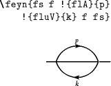

The package is now licensed under the terms of the 2-clause BSD licence.
The only other changes from v0.4b2 are mild documentation adjustments (sorry for the long delay between 0.4b2 and 0.4).
Version 0.4 was not widely released.
\below to \belowl, and added
companion \belowr. As
for version 0.4b1, but with the addition of aV for a
backward arrow (rarely used, but included for consistency; thanks to
Thomas Pruschke for the suggestion). Also added: flo for
the closed fermion loop, for phi^4 theory (plus floV and
floA for completeness; thanks to Hoang Nghia Nguyen for the suggestion;
the font should now be able to produce all scalar theory
diagrams).
Addition of the extended-size `feynx' fonts, and the \FEYN macro
(thanks to Luciano Pandola for the suggestion).
Adjustments to the sizing of half-loops (the half-loops are now squashed, though the quarter-loops aren't). Added ghost loops; we can now do all the diagrams of 2-loop QCD. The quarter-loop gluons now taper at both ends, so that two quarter-loops are no longer the same as one half-loop.
{no,}globalbang options have been added to force
behaviour when necessary). Thanks to Bryan Chen for the bugreport..dtx documentation wasn’t
generated properly when called in the not-terribly-useful
\AlsoImplementation mode; fixed, and that mode is no
longer the default.feyn18.mf, feyn24.mf
and their textsize counterparts were not included in the 0.2
distribution; thanks to Purnendu Chakraborty from the Saha Institute
for discovering this. This release also includes fixed gluon loop
characters: they were all 1 module high before, but now have the
correct sizes.\momentum macro, or the
‘!’ abbreviation. This makes the ‘a’ character (the arrow) largely
redundant and the \vertexlabel macro rather less
important.